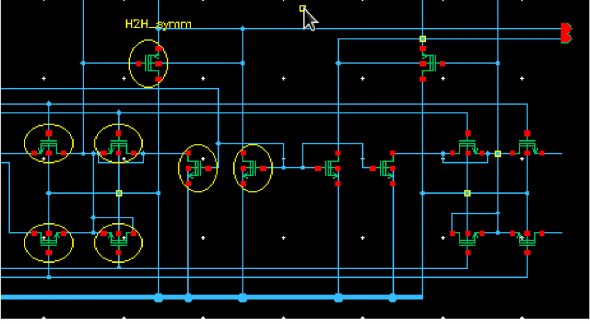
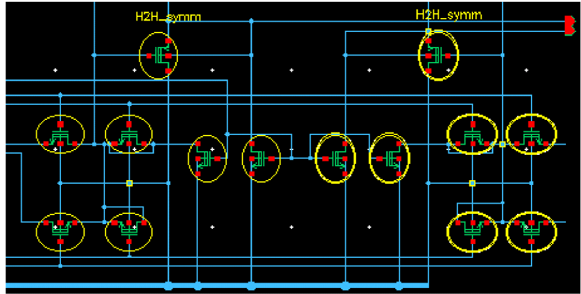

Creating a Device Design Intent for Half Cells
To apply a design intent to two groups of devices that should be laid out symmetrically:
- Select the objects for the first half in the Navigator or on the canvas.
- Right-click and choose Design Intent – Create Design Intent – Devices.
- Specify a Name for the design intent.
- Define a Style to identify the design intent annotation on the canvas.
-
Select the Profile, Half to Half.
Additional selection options are displayed specific to the Half to Half profile.

- Select and enter the property options for the design intent.
- Add any additional notes to assist in the implementation of the design intent.
-
Click OK. A device design intent annotation is created on the canvas for the first half.
 - Select the objects for the second half.
- Right-click and choose Design Intent – Add Objects to Design Intent.
-
Select the second half of the device to be created. Device design intent annotations are created on the canvas for the second half.
Selecting an object on either half of the device creates halos over the corresponding objects in each half.In Layout XL, the affected objects are immediately displayed with a sync icon as a prompt to Sync Design Intent.
Related Topics
Return to top